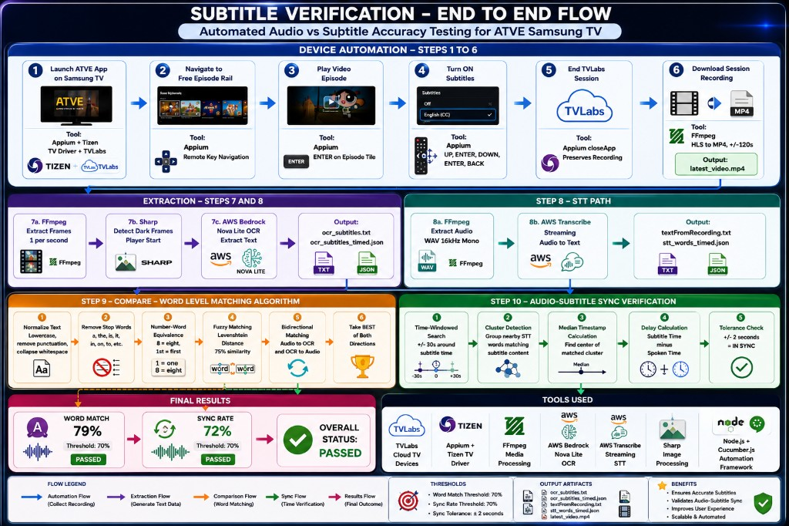

End-to-end automated Audio vs Subtitle accuracy testing for ATVE Samsung TV. Leveraging AI/ML, OCR, and Speech-to-Text to validate subtitle synchronization at scale.

Launch ATVE app on Samsung TV, navigate to content, enable subtitles, record session via TV Labs
FFmpeg extracts frames (1/sec), Sharp detects dark frames, AWS Bedrock Nova Lite OCR extracts subtitle text
FFmpeg extracts 16kHz mono WAV audio, AWS Transcribe converts speech to timed text
Normalize text, remove stop words, fuzzy matching (Levenshtein), bidirectional comparison
Time-windowed search (+/-30s), cluster detection, median timestamp, tolerance check (+/-2s)
Word Match score, Sync Rate score, overall pass/fail status with configurable thresholds
Detailed HTML report showing word-level matching results, sync analysis, timestamps, and pass/fail breakdown.
Open Full Report